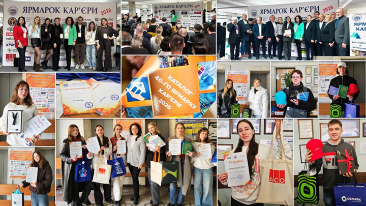
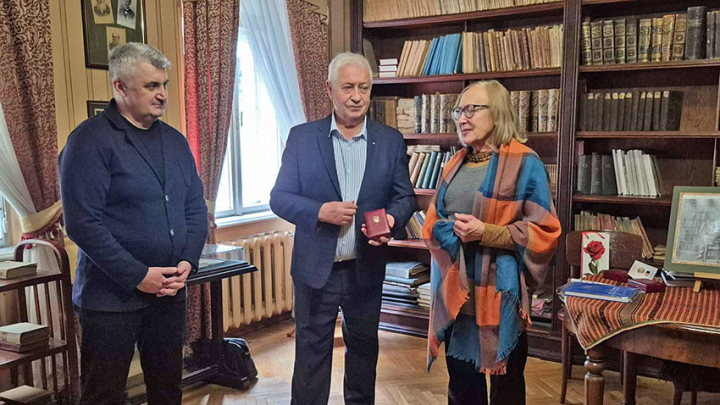
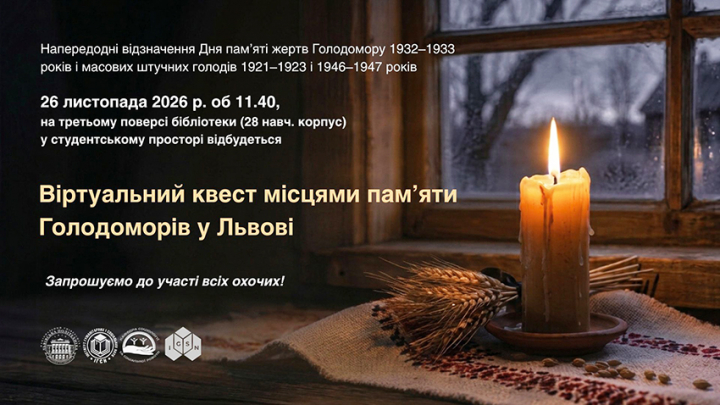
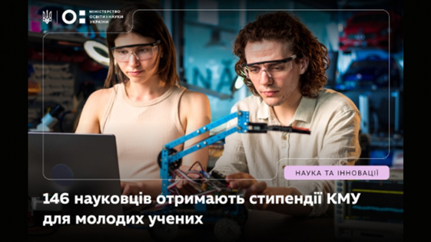
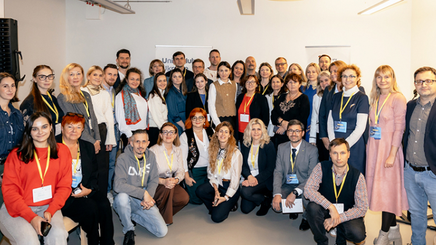
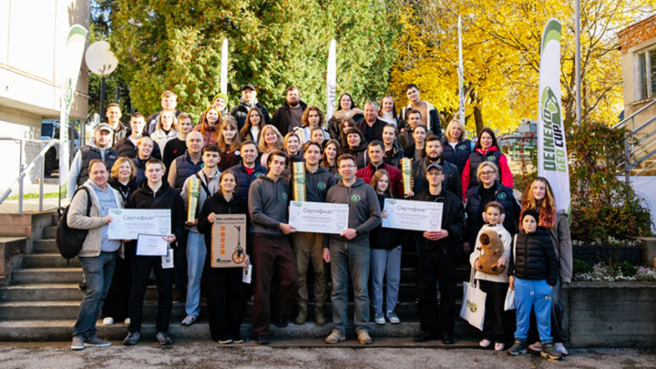
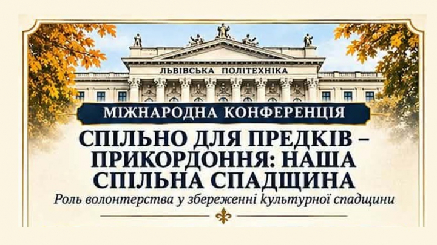

Новини університету

Ярмарок кар’єр 2026: підсумки, враження та нові можливості

Компетентності для розробників залізниці: кафедра ІТ представила досвід підготовки бакалаврів і магістрів

Професорці Надії Зелінській вручено відзнаку «Михайло Грушевський. Наука і журналістика»

Безкоштовний вебінар «AI-асистенти vs EdTech: як змінюється конкуренція на ринку цифрового навчання»

Запрошуємо до участі у віртуальному квесті місцями пам’яті Голодоморів у Львові

13 молодих учених Львівської політехніки отримають стипендії Кабінету Міністрів України

МІОК долучився до напрацювання стратегічних рекомендацій щодо ролі української діаспори у відновленні України

Крок до майбутнього: «Дні Політехніки» завітали до школи № 9 Львова

Українські університети й наукові установи можуть отримати до €9 000 на співпрацю з британськими партнерами

Роботи, що змінюють місто: у Львівській політехніці відбувся фестиваль робототехніки

У Львівській політехніці відбулися Всеукраїнські змагання Deineko Geo Cup 2026
